Circle the Square — Cast Bible
The people of ExInc, treated the way location-bible.html treats the building. Physical description, wardrobe and demeanor locked once from the exact text used to generate each character's reference set in character-refs/higgsfield/, so prompts across scenes never drift from the art.
- This supersedes
CARTOON_CAST_BIBLE.md/character-bible.html— those are the abandoned comic-style pass (company renamed "PRISM", height-scale model sheets). The live route is photoreal, perSCENE2_PLATE_SHOT_LIST.mdandSCENE3_SHOT_LIST.md. - The company in-universe is ExInc (per
CTS_Featurette_Episode.fountain). "Prism" above is the real-world production credit, not the fictional employer. - Every physical description below is copied verbatim from the
CHARACTERSobject inhiggsfield-tools/generate-cast-refs.js— that file is the actual source of the prompts that produced the reference images, so this page and the generator can't silently disagree.
CEO 02Christina Dross
Comms Lead 03Sharon Enfield
Staff 04Chris
Staff 05Rick
Head of Facilities 06Maureen
Canteen worker 07Gemma Ashcroft
Receptionist 08Trevor
Data analyst · unused 09Debbie Vance
HR manager · NEW
Jan Peach
CEO, ExInc — appears in every scene so far
- Age
- 52
- Height
- 5'10"
- Build
- Visibly overweight, round belly
- Wardrobe
- Too-tight navy suit, gold watch
Physical description
52-year-old British man. Visibly overweight build, 5'10", a prominent round belly straining and pulling at his shirt buttons, soft double chin, rounded slumped shoulders. Thinning mid-brown hair greying at the temples, combed sideways in a clear side parting over a receding hairline, visibly product-slicked and flat. Slightly-too-tight dark navy two-button suit jacket open over a white dress shirt stretched across his stomach, top button undone, tie visibly loosened and hanging askew (not tightly knotted), oversized flashy gold wristwatch, wedding ring.
In-character expression
Arrogant, pompous expression, chin raised, mid-sentence as if lecturing someone.
Characteristic pose
Standing with hands on hips in a self-important power pose, chest puffed out.
Wardrobe drift by scene
- Scenes 1–2: white shirt, tie loosened askew (script-pinned).
- Scene 3 ("next morning"): pale blue shirt, dark red tie — same suit jacket silhouette.
- Scene 4 ("next day"): same Scene 3 shirt/tie, now creased, re-buttoned wrong, plus a large foam neck brace (swaps for a smaller one in the canteen beat).
Reference plates (12/12)
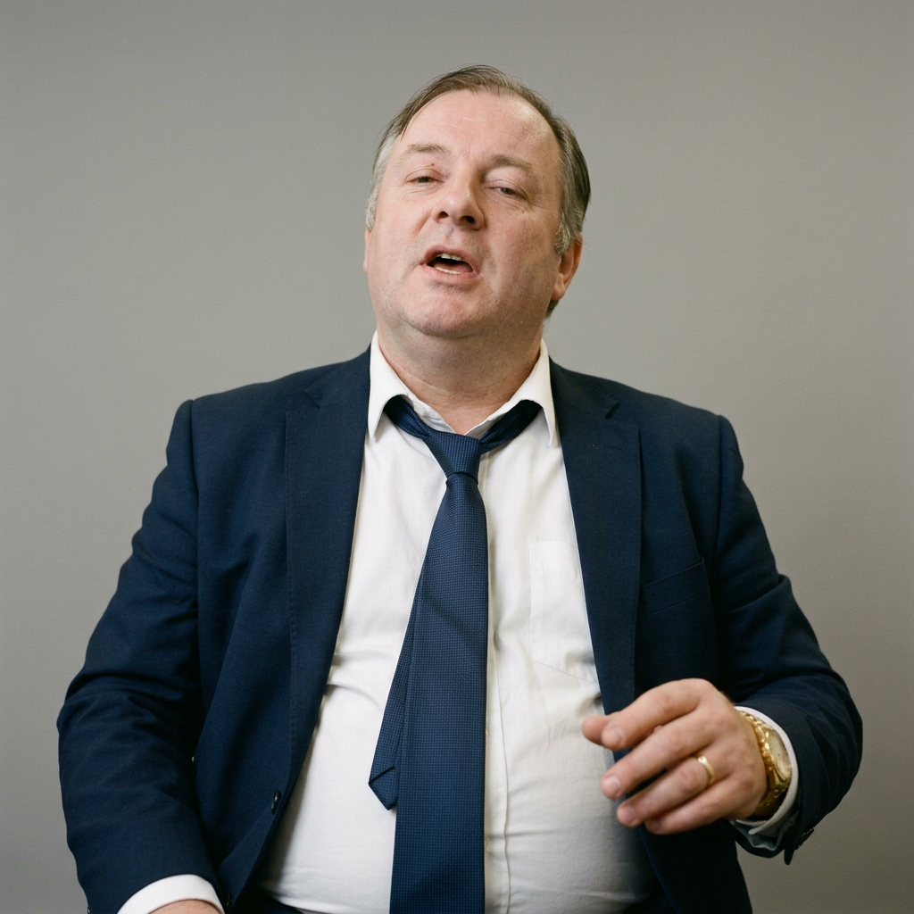
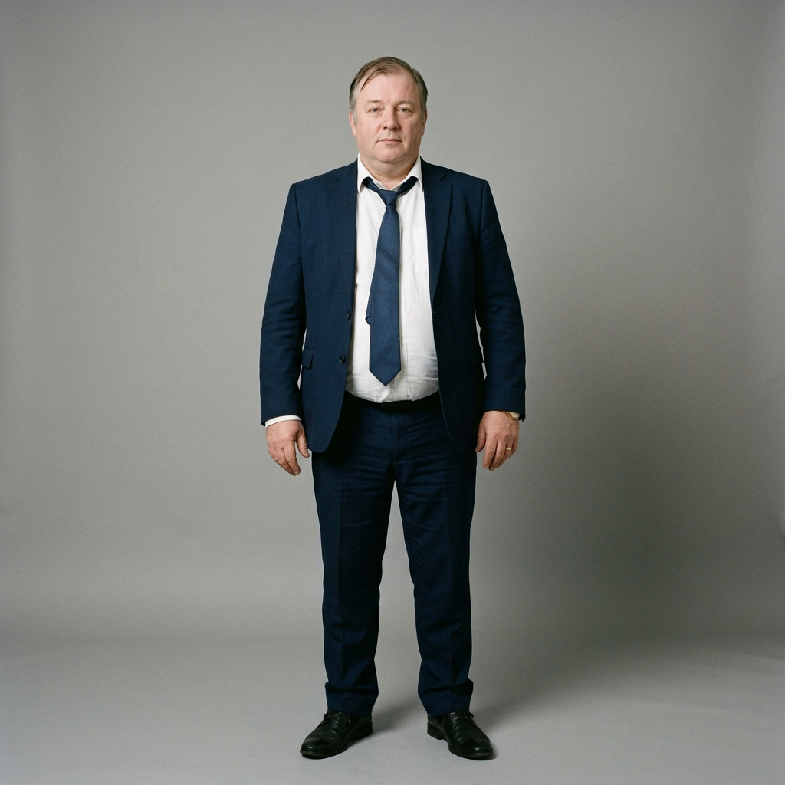
Christina Dross
Comms Lead, ExInc — Jan's fixer
- Age
- 38
- Height
- 5'6"
- Build
- Slim, upright, squared shoulders
- Wardrobe
- Charcoal blazer, cream blouse
Physical description
38-year-old British woman. Slim, upright build with squared shoulders, 5'6". Sleek dark brown bob with a blunt fringe or crisp side part, always neatly set. Tailored charcoal or navy blazer over a cream blouse, tailored trousers or pencil skirt, low block heels, minimal gold jewellery, company lanyard.
In-character expression
Cold, controlled, faint deadpan smile, appraising look.
Characteristic pose
Standing holding a tablet against her chest, poised and composed.
Reference plates (12/12)
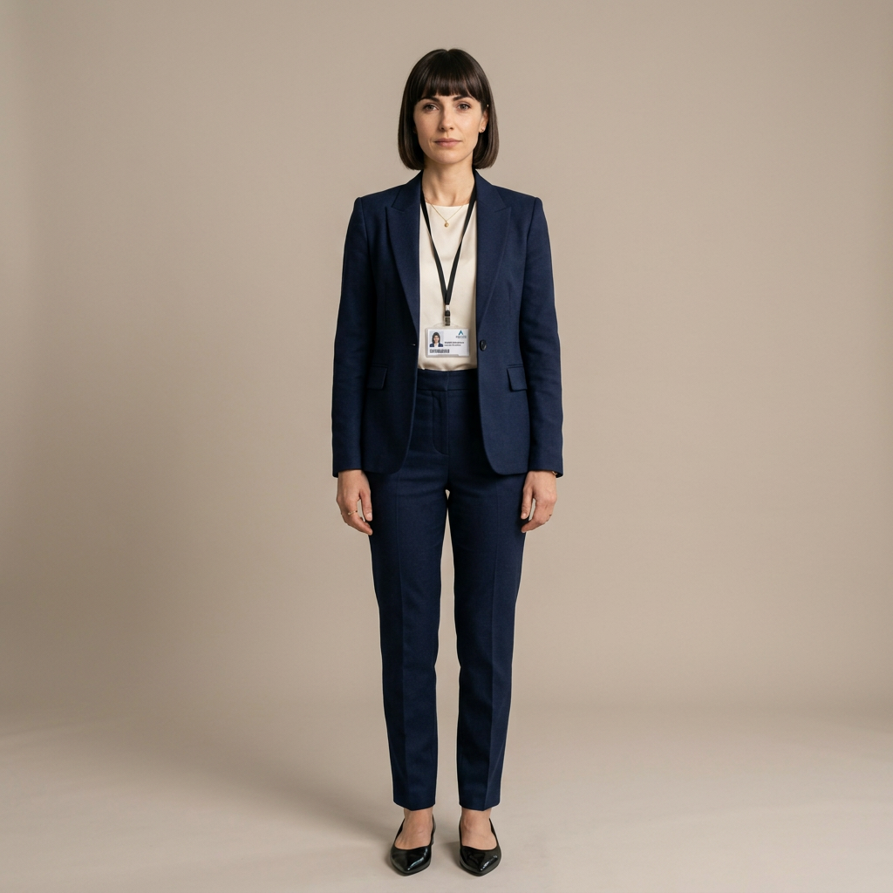
Sharon Enfield
Staff, ExInc — Jan's affair
- Age
- 34
- Height
- 5'5"
- Build
- Curvy
- Wardrobe
- Jewel-tone blouse, pencil skirt
Physical description
34-year-old British woman. Curvy build, 5'5". Shoulder-length wavy auburn hair worn loose. Fitted jewel-tone blouse, pencil skirt, heels, hair and makeup neatly done, company lanyard.
In-character expression
Warm, knowing half-smile, relaxed confidence.
Characteristic pose
Standing with one hand on hip, phone in the other hand, casual confident stance.
Reference plates (12/12)
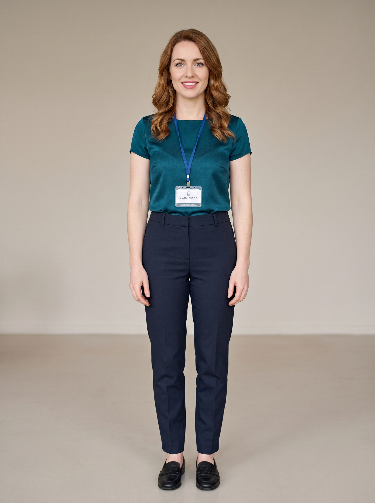
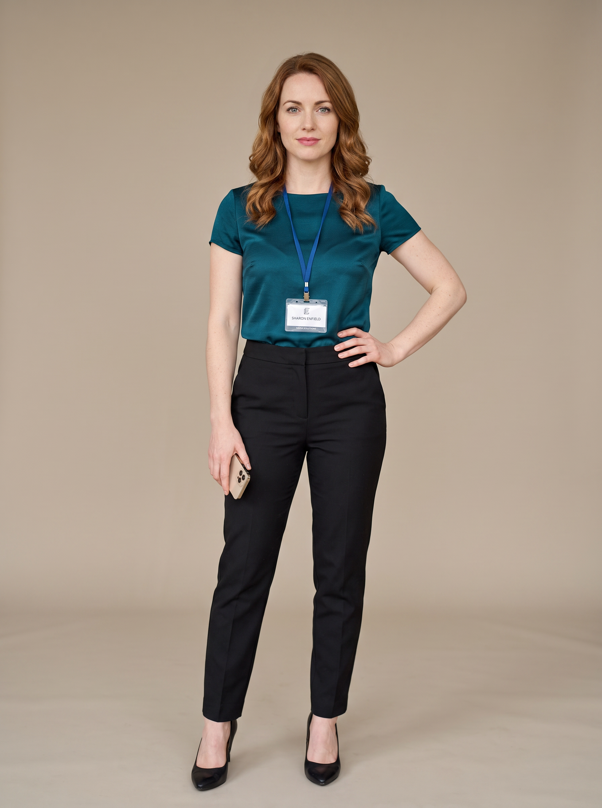
Chris
Staff, ExInc — office smart-mouth
- Age
- 32
- Height
- 5'11"
- Build
- Lean
- Wardrobe
- Light blue shirt (script-pinned)
Physical description
32-year-old British man. Lean build, 5'11". Short, textured dark hair. Casual-smart office wear, shirt untucked or sleeves rolled, no tie, company lanyard, casual shoes.
In-character expression
Sarcastic smirk, one eyebrow raised, amused.
Characteristic pose
Standing leaning slightly to one side, coffee cup in hand, relaxed slouched posture.
Reference plates (12/12)
Rick
Head of Facilities, ExInc — title confirmed in Scene 4 dialogue
- Age
- 40
- Height
- 6'0"
- Build
- Sturdy, broad
- Wardrobe
- Grey polo (script-pinned)
Physical description
40-year-old British man. Sturdy, broad build, 6'0". Short greying hair, near-buzzcut. Plain button-down or polo shirt, sleeves rolled, sturdy trousers, practical shoes, company lanyard.
In-character expression
Flat, unbothered, unblinking stare, arms crossed.
Characteristic pose
Standing at ease with arms crossed, sturdy stance, watching something off camera.
Props
Prop taser (Scene 3 climax). Scene 4 establishes a whole desk drawer of contraband: bear spray, zip ties, a second taser, an unlicensed flare gun.
Reference plates (12/12)
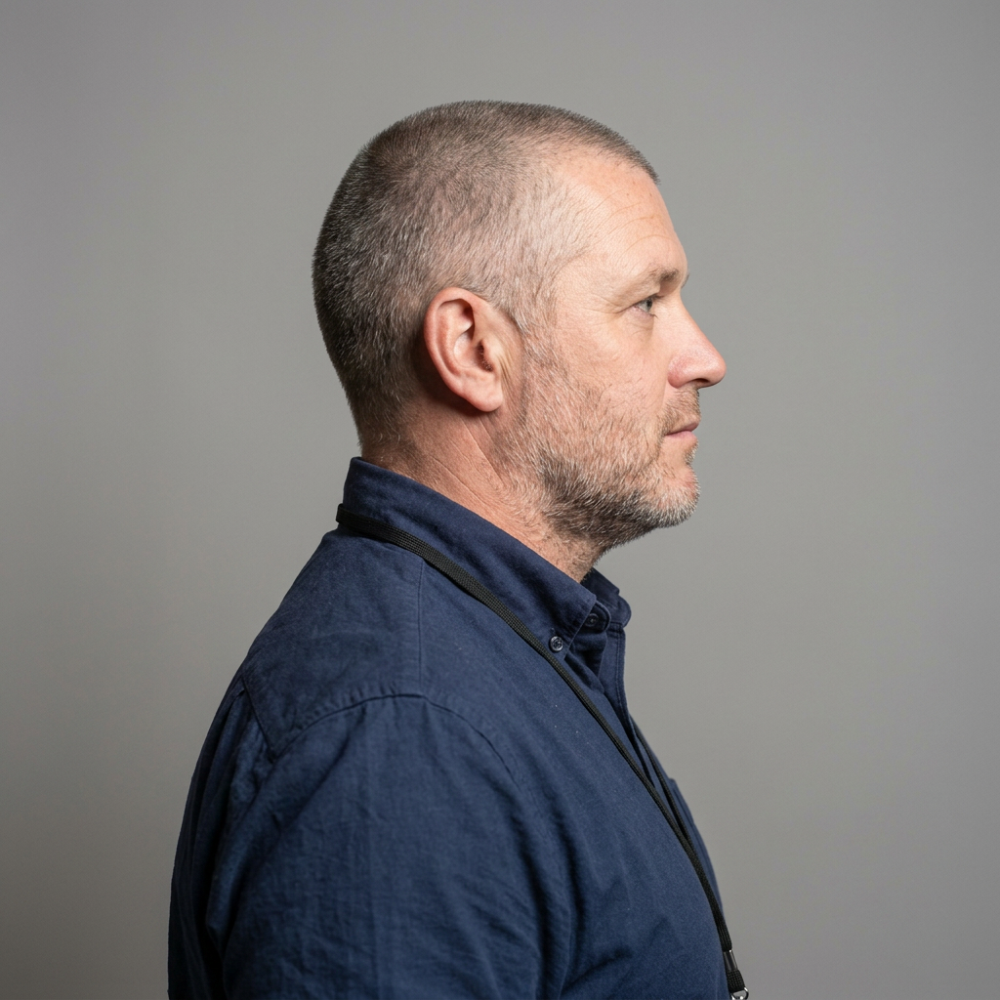
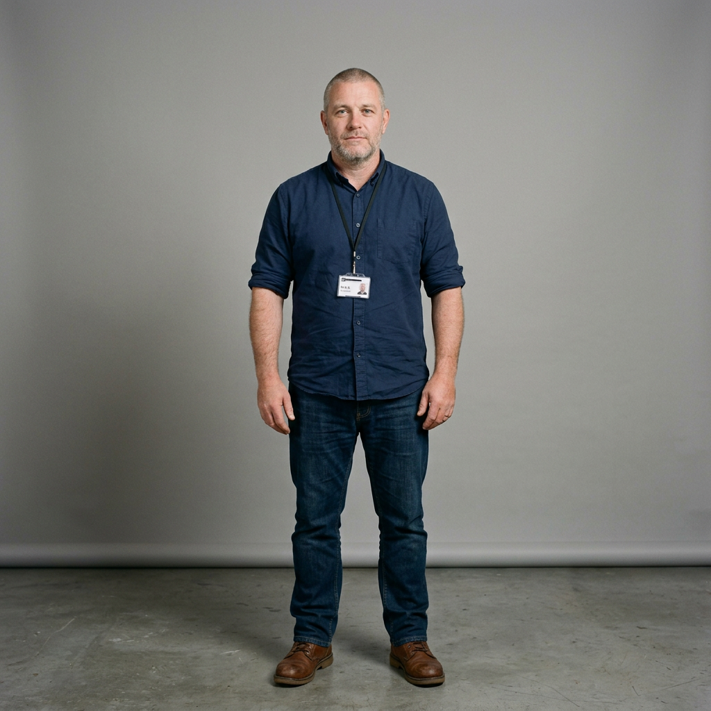
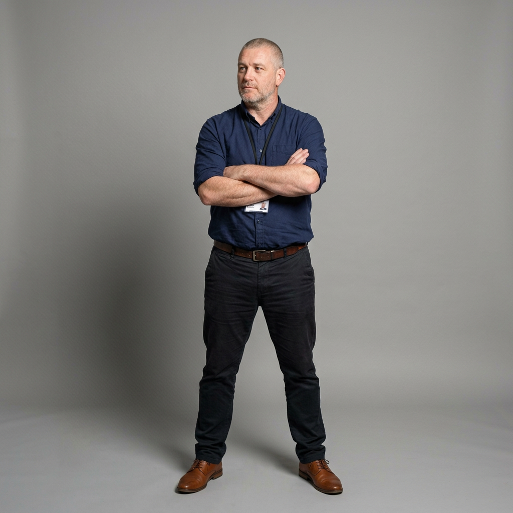
Maureen
Canteen worker — Scene 3's "CANTEEN WORKER," named in production
- Age
- 58
- Build
- Average
- Wardrobe
- Beige apron, white polo
Physical description
58-year-old British woman, a canteen worker. Average build. Short greying curly hair pinned back, reading glasses on a chain. Beige apron over a white polo shirt.
In-character expression
Warm, no-nonsense, faint smile, practical demeanor.
Characteristic pose
Standing behind a counter gesture, wiping hands on apron, welcoming but brisk posture.
Reference plates (12/12)
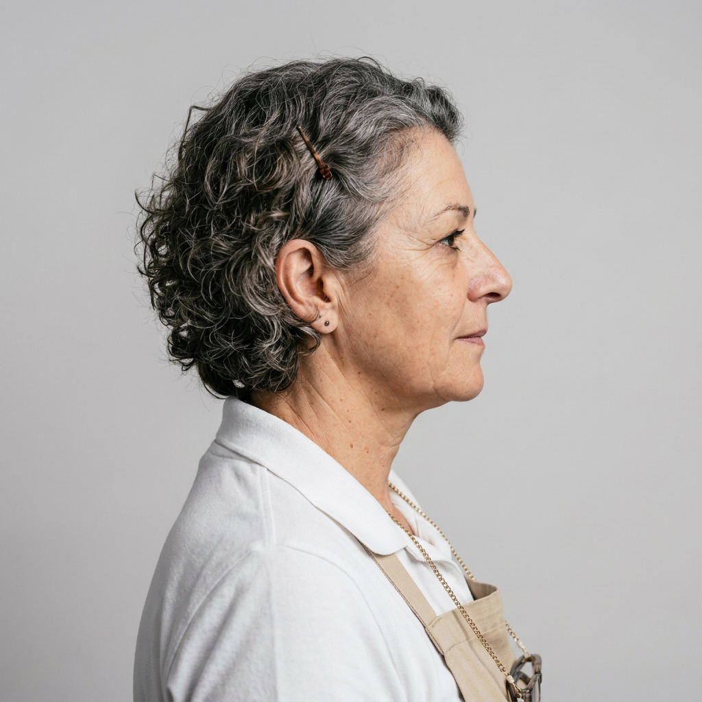
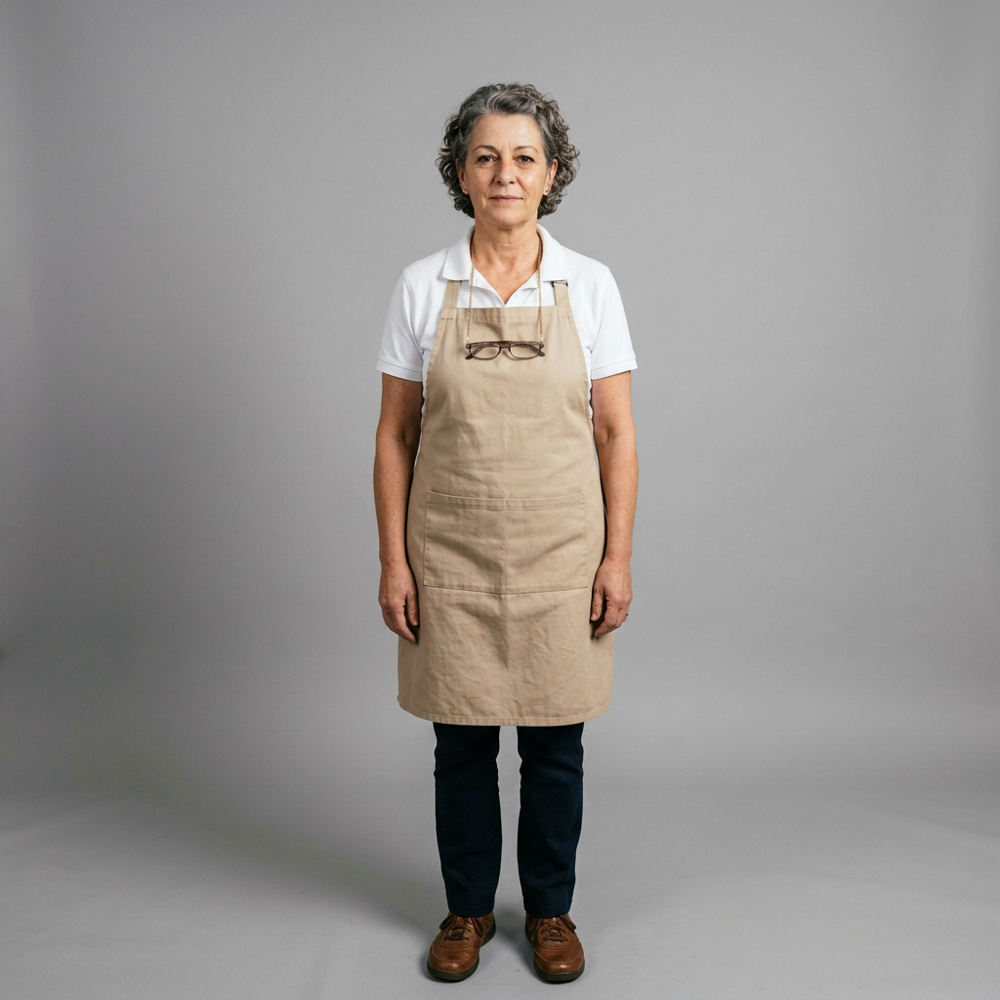
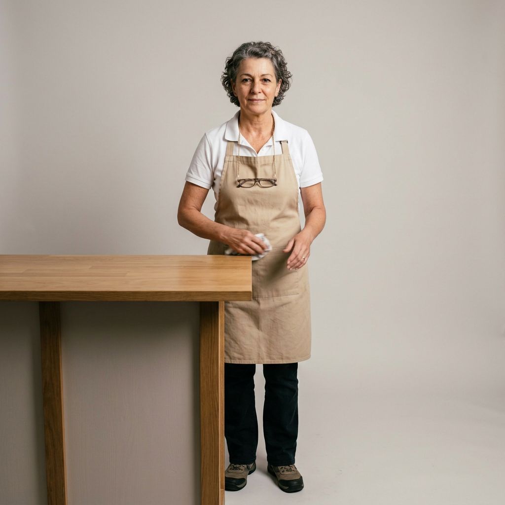
Gemma Ashcroft
Receptionist, front of house — no scene yet
- Age
- 26
- Height
- 5'7"
- Build
- Slim
- Wardrobe
- White blouse, slate-grey blazer
Physical description
26-year-old British woman, a receptionist. Slim build, 5'7". Sleek dark blonde hair in a high ponytail. White blouse, slate-grey blazer, pencil skirt, black low heels, orange lanyard, discreet telephone headset.
In-character expression
Polished, professional customer-service smile, warm and welcoming.
Characteristic pose
Standing with one hand near her ear adjusting the telephone headset, professional welcoming posture.
Reference plates (12/12)
Trevor
Data analyst — unused, no scene written
- Age
- 35
- Height
- 5'10"
- Build
- Average
- Wardrobe
- Charcoal overcoat
Physical description
35-year-old British man, a data analyst. Average build, 5'10". Short neat brown hair, clean-shaven. Charcoal overcoat over a slate-grey shirt, dark trousers, cross-body messenger bag, company lanyard.
In-character expression
Completely deadpan, blank stare directly into camera, no expression.
Characteristic pose
Standing perfectly still, arms at sides, blank deadpan expression, messenger bag across his body.
Reference plates (12/12)
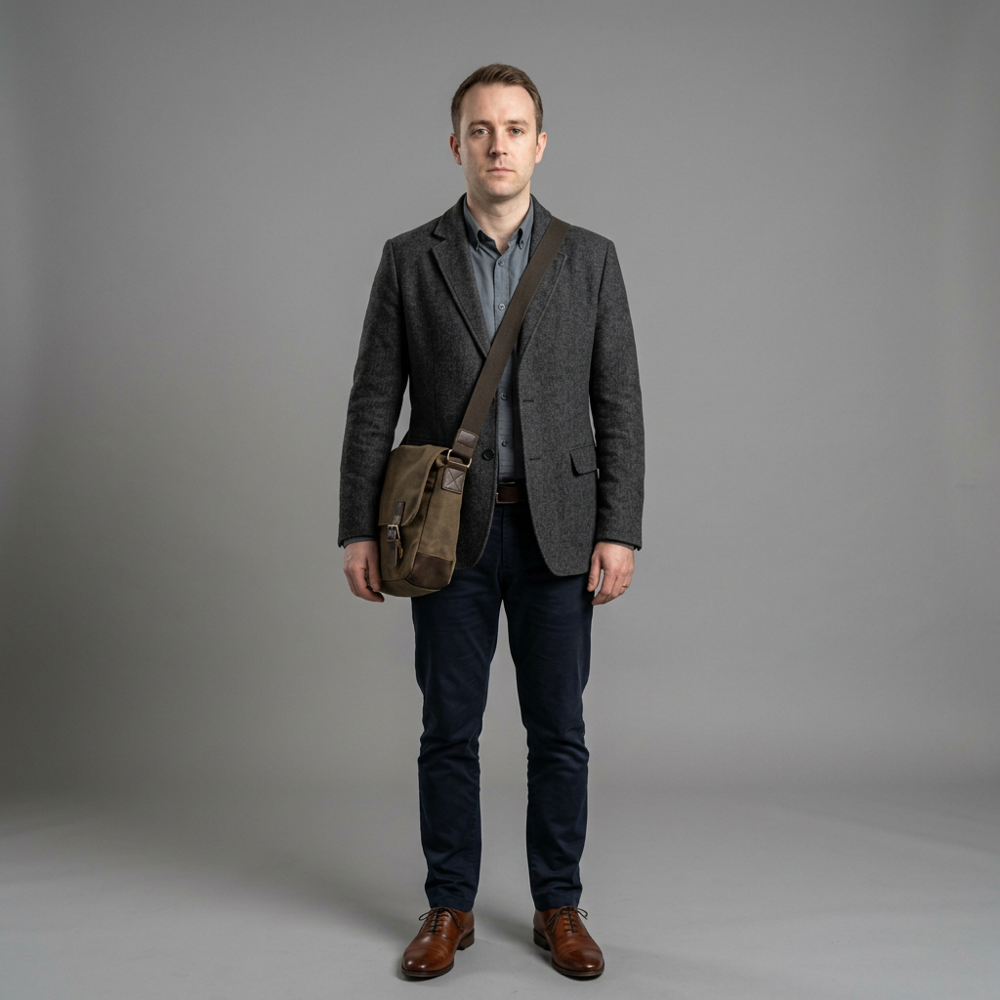
Debbie Vance
HR manager, ExInc — introduced in Scene 4 (SCENE4_SHOT_LIST.md)
- Age
- 45
- Height
- 5'6"
- Build
- Average, sturdy
- Wardrobe
- Forest-green cardigan
Physical description
45-year-old British woman, an HR manager. Average sturdy build, 5'6". Straight shoulder-length mousy brown hair with a blunt fringe, practical and unstyled. Plain forest-green cardigan over a cream blouse, sensible navy trousers, flat shoes, an HR lanyard with a laminated badge, reading glasses pushed up on top of her head.
In-character expression
Completely unbothered, professionally blank deadpan expression — the look of someone who stopped being surprised by anything in this building years ago.
Characteristic pose
Standing holding a clipboard against her chest with both hands, weight on one hip, patiently waiting.
higgsfield-tools/browser/debbie_refs.js for the abandoned 12-shot-recipe attempt. This one turnaround sheet is the current reference; a matching 12-shot angle/expression/lighting set (front/3-4/profile/slight-up/slight-down/expressions/fullbody/lighting) has not been built yet, so composited shots needing an exact angle not shown here should be edited from this sheet rather than invented from text alone.Reference plate — turnaround sheet

Cast status
| Character | Status | First appearance |
|---|---|---|
| Jan Peach | Active, reference locked | Scene 1 — Jan's office |
| Christina Dross | Active, reference locked | Scene 1 — Jan's office |
| Sharon Enfield | Active, reference locked | Scene 1 — Jan's office |
| Chris | Active, reference locked | Scene 1 — Corridor/open-plan |
| Rick | Active, reference locked | Scene 1 — Corridor/open-plan; taser reveal in Scene 3 |
| Maureen | Active, reference locked | Scene 3 — Canteen |
| Gemma Ashcroft | Reference locked, unused | None written yet |
| Trevor | Reference locked, unused, canon unconfirmed | None written yet |
| Debbie Vance | New — turnaround sheet generated, 12-shot set not yet built | Scene 4 — HR breakout room |